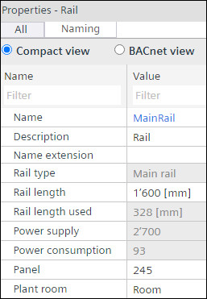
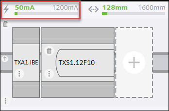
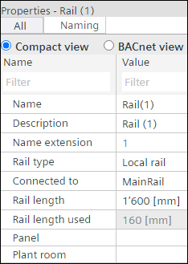
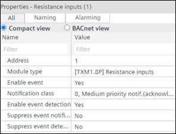

轨道属性窗口
Properties window
1. Modify main rail properties
- You want to edit the properties of the main rail.
- Click on the main rail.
- The Properties window displays to the right of the graphical view.

- In the Rail length field, enter the value for the length of the rail.
- You have adjusted the length of the rail.
- Enter the required name of the rail in the Name field and the description of the rail in the Description field and select the extension of the rail from the list.
- Enter the control panel number in the Panel field and the name of the plant in the Plant room field.
- You have made the required changes in the properties of the main rail.
2. Modify local rail and decentralized rail properties
对于分散式铁路，自己的电源估算显示在分散式铁路的顶部。

- You want to edit the properties of local rail or decentralized rail.
- Click on the local rail or main rail.
- The Properties window displays to the right of the graphical view.

- In the Rail length field, enter the value for the length of the rail.
- You have adjusted the length of the rail.
- Enter the required name of the rail in the Name field, description of the rail in the Description field, and select the extension of the rail from the list.
- Enter the panel name in the Panel field and the name of the plant room in the Plant room field.
- To change the type of rail, select the type of rail in the Rail type field.
- To designate the connection of the rails, select the rail type in the Connected to field.
- You have made the required changes in the properties of the local and decentralized rail.
3. Modify module properties
- You want to edit the properties of the modules in the rails.
- Click on the selected I/O module.
- The Properties window displays to the right of the graphical view.

- Make the required changes in the Address, Enable event, Notification class, Enable event detection, Suppress event notification and Suppress event detection. For Module type, the user can only change to the possible module types that fit to the already assigned data points.
- You have made the required changes in the properties of the selected module.